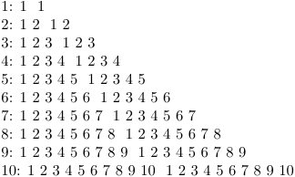
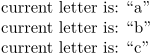
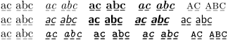
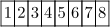
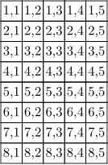

< Prev: Branches & Decisions | Top: System Macros | Next: Action Processing >
TeX does not offer us powerful for-loop mechanisms. On the other hand its recursion engine is quite unique. We therefore identify the for-looping macros by this method. The most simple alternative is the one that only needs a number.
Contents
\dorecurse
\dorecurse {n} {whatever we want}
This macro can be nested without problems and therefore be
used in situations where Plain TeX's \loop macro
ungracefully fails. The current value of the counter is
stored in \recurselevel, and is available
for use anywhere within the second parenthesis
where whatever we want text is found.
-
\dorecurse % outer loop {10} { \setevalue{outerlevel}{\recurselevel} % save the outer value in a variable \recurselevel: % outer value \dorecurse % inner loop {\getvalue{outerlevel}} % outer value {{\recurselevel} } % inner value \dorecurse % inner loop {\getvalue{outerlevel}} % outer value {{\recurselevel} } % inner value \endgraf}
- 
In this example the first and second
\recurselevel concern the outer loop, while the third
and fourth ones concern the inner loop. The depth of the
nesting is available for inspection in \recursedepth.
Both \recurselevel and \recursedepth are
macros. The real counters are hidden from the user because
we don't want any interference.
\doloopoverlist
\doloopoverlist {a, b, c} {current letter is: “\recursestring”\par}
As the command name reads, it loops over the list values.
-
\doloopoverlist {a, b, c} {current letter is: “\recursestring”\par}
- 
\recursestring is used instead of \recurselevel.
-
\doloopoverlist{\tf,\ss,\tt} {\bgroup\recursestring\doloopoverlist{\rm,\it,\bf,\bi,\sc} {\bgroup\recursestring a̱ḇc̱ a̲b̲c̲\quad\egroup}\egroup\par}
- 
It also allows commands, as contained in the previous code snippet.
\dostepwiserecurse
The simple command \dorecurse is
a special case of the more general:
\dostepwiserecurse {from} {to} {step} {action}
This commands accepts positive and negative steps. Illegal values are handled as well as possible and the macro accepts numbers and counters.
\dostepwiserecurse {1} {10} {2} {...} \dostepwiserecurse {10} {1} {-2} {...}
\doloop \exitloop
Sometimes loops are not determined by counters, but by (a combinations of) conditions. We therefore implement a straightforward loop, which can only be left when we explicitly exit it. Nesting is supported. First we present a more extensive alternative.
\doloop {Some kind of typesetting punishment \par \ifnum\pageno>100 \exitloop \fi}
When needed, one can call for \recurselevel and
\recursedepth.
The loop is executed at least once, so beware of situations like:
\doloop {\exitloop some commands}
It's just a matter of putting the text into the \if
statement that should be there anyway, like in:
\doloop {\ifwhatever \exitloop \else some commands\fi}
You can also quit a loop immediately, by using
\exitloopnow instead. Beware, this is more sensitive
for conditional errors.
Recursion and expansion
Using recursion to build tables requires some particular attention:
-
\bTABLE \bTR \dorecurse{8}{\expanded{\bTD\recurselevel\eTD}} \eTR \eTABLE
- 
Multi-dimensional tables offer another illustration:
-
\bTABLE \dorecurse{8}{ \bTR \dorecurse{5}{\bTD #1,##1 \eTD} \eTR } \eTABLE
-

Alternatively, (mkiv only?)
-
\bTABLE \dorecurse{8}{\bTR \dorecurse{5}{\bTD \currentTABLErow,\currentTABLEcolumn \eTD} \eTR} \eTABLE
- 
For further discussion on loops and expansion, see Expansion control as well as this blog post.
< Prev: Branches & Decisions | Top: System Macros | Next: Action Processing >